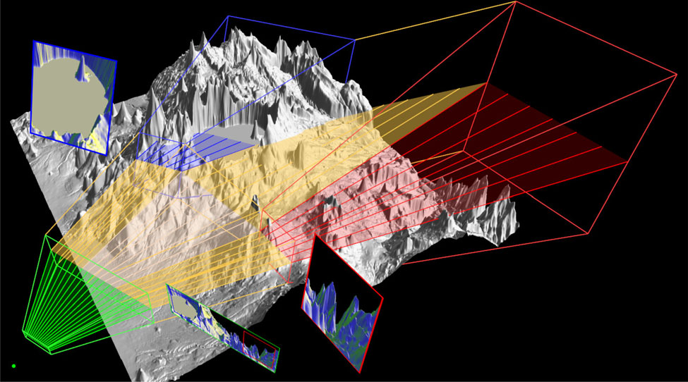

Conventional visualization of terrain dataset (top) and multiperspective visualization constructed with our framework in top-down fashion (bottom). The viewpoint was modified for two regions individually to reveal a lake (left) and a valley (right).
Occlusions are a severe bottleneck for the visualization of large and complex datasets. Conventional images only show dataset elements to which there is a direct line of sight, which significantly limits the information bandwidth of the visualization. Multiperspective visualization is a powerful approach for alleviating occlusions to show more than what is visible from a single viewpoint. However, constructing and rendering multiperspective visualizations is challenging. We present a framework for designing multiperspective focus+context visualizations with great flexibility by manipulating the underlying camera model. The focus region viewpoint is adapted to alleviate occlusions.
The framework supports multiperspective visualization in three scenarios. In a first scenario, the viewpoint is altered independently for individual image regions to avoid occlusions. In a second scenario, conventional input images are connected into a multiperspective image. In a third scenario, one or several data subsets of interest (i.e. targets) are visualized where they would be seen in the absence of occluders, as the user navigates or the targets move. The multiperspective images are rendered at interactive rates, leveraging the camera model’s fast projection operation. We demonstrate the framework on terrain, urban, and molecular biology geometric datasets, as well as on volume rendered density datasets.
Visualization of the underlying multiperspective camera model. The green, blue, and red frusta visualize the scene from the primary and the two secondary viewpoints.
Meng-Lin Wu and Voicu Popescu
Multiperspective Focus+Context Visualization
IEEE Transactions on Visualization and Computer Graphics, vol. 22, no. 5, pp. 1555-1567, 1 May 2016.
URL: http://ieeexplore.ieee.org/stamp/stamp.jsp?tp=&arnumber=7120994&isnumber=7440926